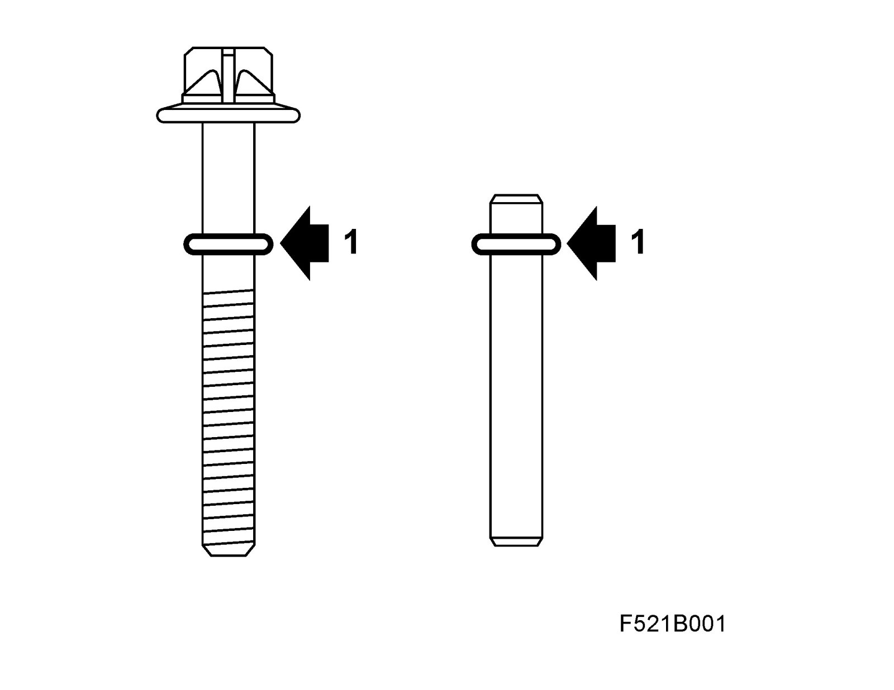
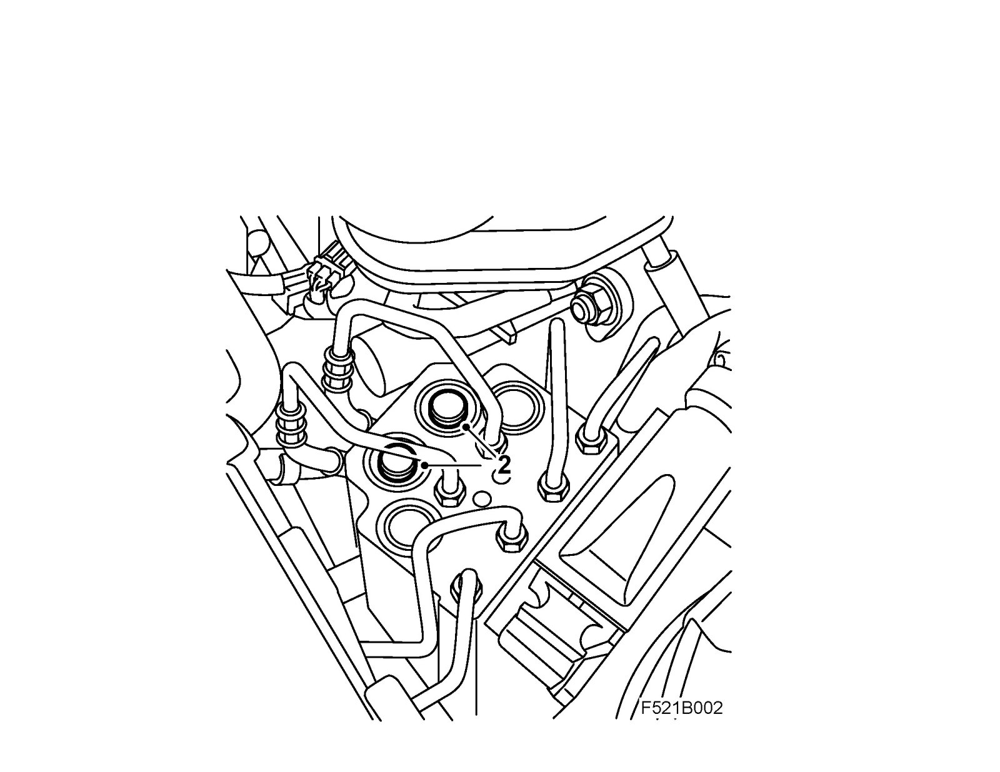
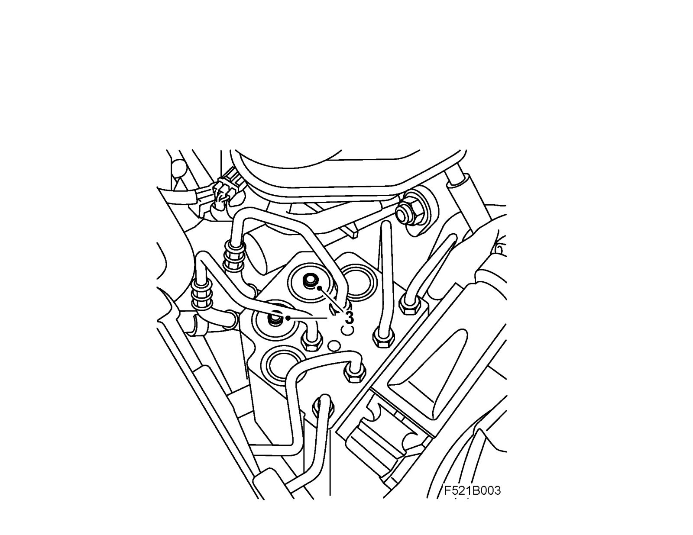
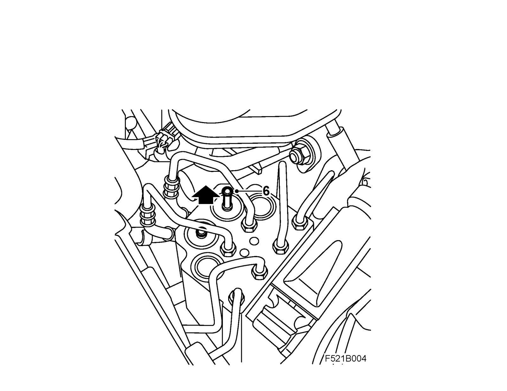

Hydraulic Assembly: Testing and Inspection
Hydraulic unit TCS/ESP, check of internal leakageCheck
1. Thread O-rings, e.g. 6x1.25 mm, onto two cylindrical pins 6x50 mm (50 mm minimum length) alternatively onto two bolts M6x60 mm. If bolts are used, the O-ring must be placed above the thread. The O-ring is used as a position marker.

2. Remove both rubber plugs on the hydraulic unit.

3. Insert the pins/bolts down into each respective hole. Check that the O-rings are lying against the surface of the hydraulic unit. If the head of the bolt is touching the brake pipes, saw off the head of the bolt or carefully bend the brake pipes away.

4. Get a colleague to start the car.
5. Depress the brake pedal and then release it after a short time.

6. Check whether any of the pins/bolts move up/down. Repeat the procedure a couple of times.
7. If any of the pins/bolts move visibly, then there is a leak in the valves. Change hydraulic unit.
Note
The control module shall be re-used on the new unit.
8. If none of the pins/bolts move then the fault is in another of the brake system's components. Remove the pins/bolts and refit the rubber plugs before continuing fault diagnosis.